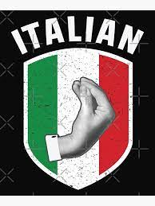
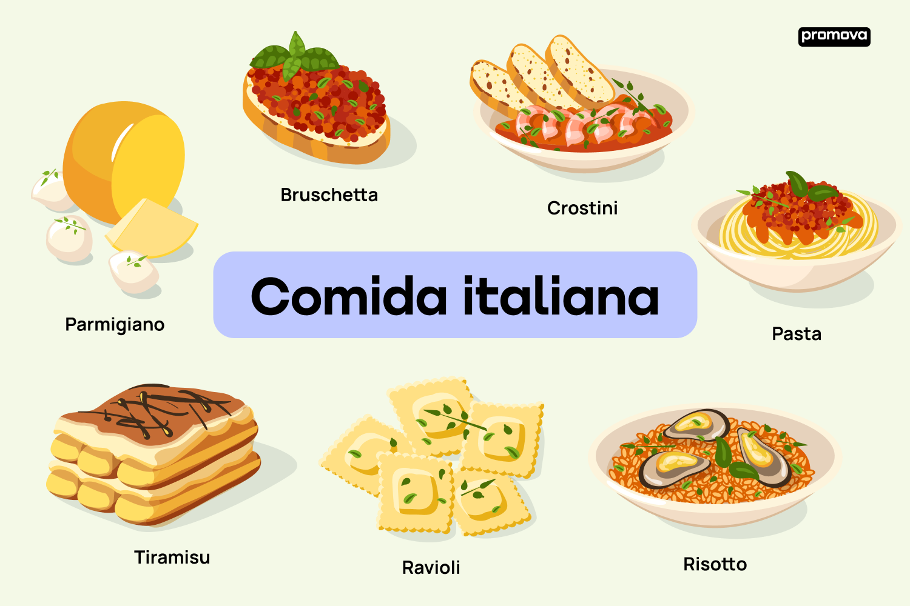
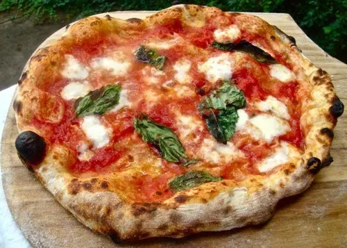
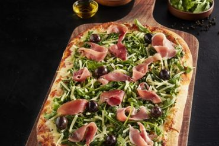
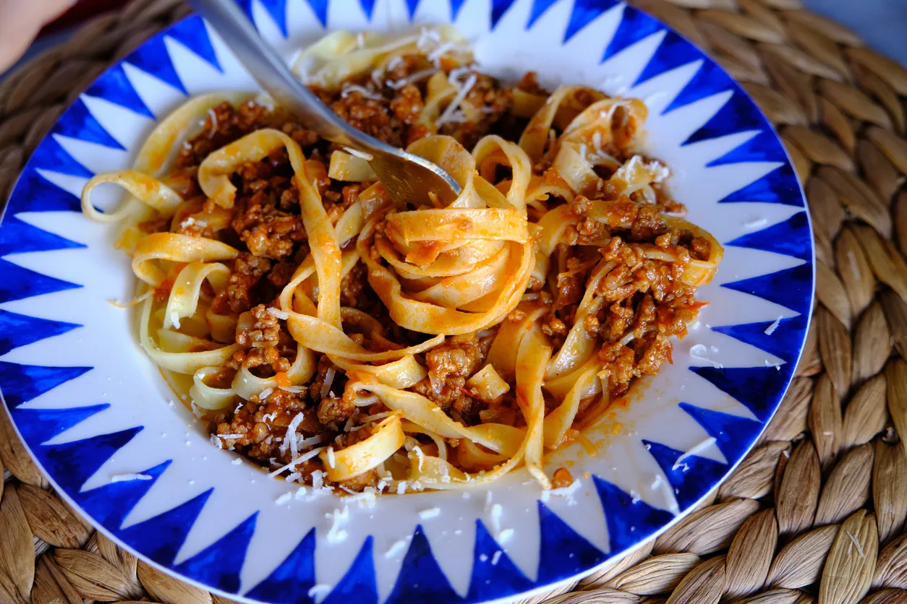
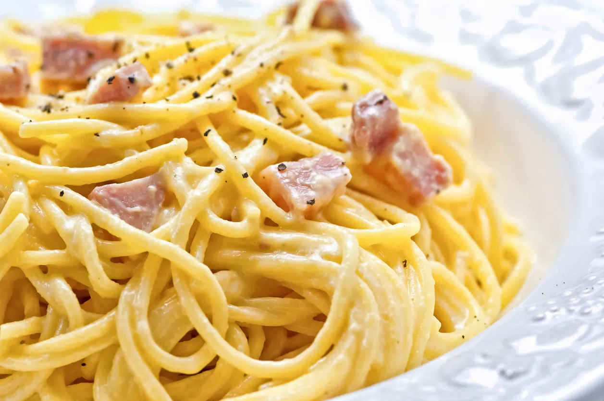
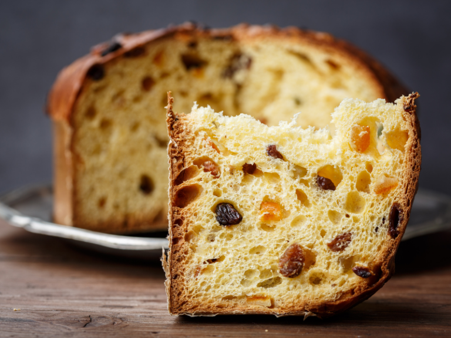
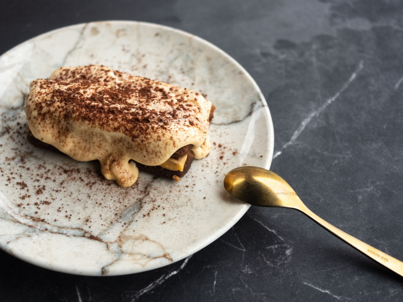

La gastronomía italiana (cucina italiana) incluye los alimentos, técnicas, platos y tradiciones culinarias de Italia. Refleja la riqueza cultural de sus regiones y de su historia.
La gastronomía Italiana
La cocina italiana es parte integral de las gastronomías mediterráneas, cuya dieta fue declarada Patrimonio Cultural Inmaterial de la Humanidad en 2010 por la Unesco. Es una cocina con fuerte carácter histórico y tradicional, variada gracias a sus regiones y heredera de recetas como la polenta o la pizza, que hoy se disfrutan en todo el mundo.
Estos son algunos de los platos más típicos de Italia:
Pizza
Pizza Napolitana
La pizza Napolitana, originaria de Nápoles, está protegida por una certificación de Especialidad Tradicional Garantizada (ETG). La masa se prepara con harina, levadura, sal y agua, y se deja fermentar 24 horas. Se hornea 90 segundos en horno de leña a 900°F, obteniendo un centro suave y una corteza esponjosa llamada *cornicione*.
Dato curioso: ¡En 2017, el arte de hacer pizza napolitana fue incluido en la lista del patrimonio cultural inmaterial de la UNESCO!
Pasta
Pizza alla Pala
La pizza alla pala nació en panaderías romanas para aprovechar la masa de pan sobrante. Se hornea en horno eléctrico a 580°F, con una masa muy hidratada (80% de agua), logrando una base crujiente por fuera y esponjosa por dentro.
Pasta
Espaguetis
Espaguetis con salsa a la boloñesa
Originalmente se preparaba sin tomate, cocinando la carne en vino blanco y leche. La versión oficial de la receta es la de Emilia-Romaña (1982), que utiliza carne magra de ternera (*cartella*), panceta y verduras.
Pasta
Espaguetis a la carbonara
Plato clásico de Roma. La receta tradicional lleva huevos, queso pecorino o parmesano, aceite de oliva virgen extra, guanciale (papada de cerdo) y pimienta negra.
Postres
Panettone
Pan dulce clásico de la Navidad italiana, elaborado con harina, huevos, azúcar, levadura, leche, mantequilla, pasas y frutas confitadas. Es popular en todo el mundo.
Postres
Tiramisú
Uno de los postres italianos más famosos. Se sirve frío, en capas de bizcocho empapado en café y crema de queso mascarpone, huevo y cacao.